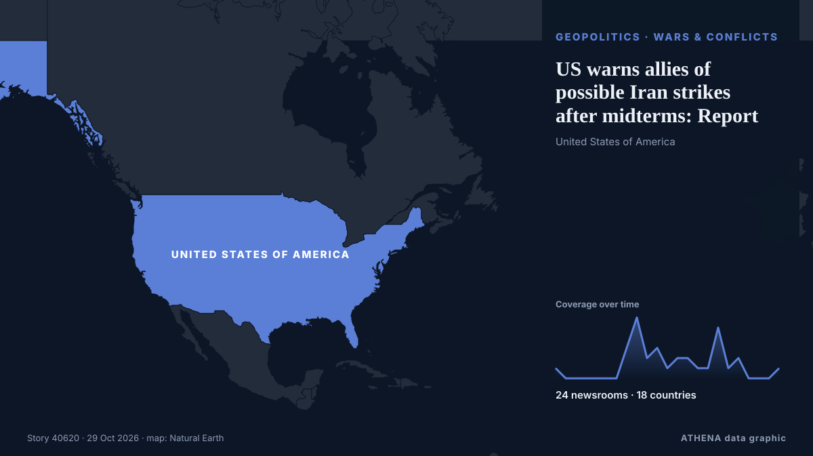

US warns allies of possible Iran strikes after midterms: Report

Tensions across the Middle East remain high, with the United States reportedly preparing for potentially major military operations against Iran following the US midterm elections, while fighting… من CGTN (World)
نشرته بشكل مستقل 24 مصدرًا في 18 دولة منذ 27 أكتوبر، وأول من نشره CGTN (World)؛ والتغطية تتراجع. يقدّر ATHENA الخطر بأنه مرتفع (6.7/10)، ويعود ذلك أساسًا إلى خطورة الضرر الموصوف ونطاقه الجغرافي والقطاعي. الثقة 92٪ (مرتفعة)، وعدد المصادر المستقلة المؤكِّدة: 24، بمتوسط موثوقية للمصادر يبلغ 76٪.
لماذا يهم: قد تغيّر التطورات الأمنية والدبلوماسية التحالفات والتجارة والأسواق إلى ما هو أبعد بكثير من الدول المعنية مباشرة.
ما الذي تغيّر: 11 تقارير جديدة من 11 غرف أخبار خلال 24 ساعة حتى 29 أكتوبر.
تُعرض العناوين بالإنجليزية كما نُشرت.
نظرة سريعة
اختير وقُيِّم وكُتب وفق منهجية ATHENA المنشورة. لا يتدخل أي محرر في الأحداث بعينها. كيف يُنتَج ›
| 27 Oct 03:41 UTC | 1 |
|---|---|
| 27 Oct 06:41 UTC | 0 |
| 27 Oct 09:41 UTC | 0 |
| 27 Oct 12:41 UTC | 0 |
| 27 Oct 15:41 UTC | 0 |
| 27 Oct 18:41 UTC | 0 |
| 27 Oct 21:41 UTC | 0 |
| 28 Oct 00:41 UTC | 3 |
| 28 Oct 03:41 UTC | 6 |
| 28 Oct 06:41 UTC | 2 |
| 28 Oct 09:41 UTC | 3 |
| 28 Oct 12:41 UTC | 1 |
| 28 Oct 15:41 UTC | 2 |
| 28 Oct 18:41 UTC | 2 |
| 28 Oct 21:41 UTC | 1 |
| 29 Oct 00:41 UTC | 1 |
| 29 Oct 03:41 UTC | 5 |
| 29 Oct 06:41 UTC | 1 |
| 29 Oct 09:41 UTC | 2 |
| 29 Oct 12:41 UTC | 0 |
| 29 Oct 15:41 UTC | 0 |
| 29 Oct 18:41 UTC | 0 |
| 29 Oct 21:41 UTC | 1 |
| 28 Oct 02:19 UTC | 4.6 |
|---|---|
| 28 Oct 02:41 UTC | 5.8 |
| 28 Oct 10:40 UTC | 6.2 |
| 28 Oct 11:07 UTC | 6.7 |
| 29 Oct 10:34 UTC | 6.8 |
| 29 Oct 23:39 UTC | 6.7 |
| 29 Oct 23:39 UTC | 6.7 |
لماذا هذه الأرقام
الأهمية
الخطر
الثقة
التغطية — من نشر الخبر ومتى
العنوان كما نُشر · يفتح الأصل- CGTN (World) · الصين · ChinaTensions persist amid possible US strikes, Saudi-Houthi clashes
- Anadolu Agency (English) · تركيا · TurkeyUS warns Gulf states of possible 'short, intense' Iran war after midterms: Report
- The National · الإمارات العربية المتحدة · United Arab EmiratesMiddle East latest: US warns Gulf allies of possible renewal of Iran war, report says
- Gulf News · الإمارات العربية المتحدة · United Arab EmiratesUS-Israel-Iran war: What UAE residents need to know today (Oct. 28, 2026)
- APA (English) · أذربيجان · AzerbaijanUS tells Gulf more strikes on Iran could be coming after midterms: WSJ
- Arab Times · الكويت · KuwaitGulf on edge as US weighs massive Iran strikes after midterm elections
- TASS (English) · روسيا · RussiaUS warns Gulf states of possible military action after November 3 — WSJ
- Khaama Press · أفغانستان · AfghanistanUS Warns Gulf States to Prepare for Possible New Iran Strikes: WSJ
- Shafaq News (English) · العراق · IraqUS alerts Gulf states to possible Iran war
- NEWS.am (English) · أرمينيا · ArmeniaUS may resume strikes on Iran after midterm elections, sources say
- Xinhua (English) — page reader · الصين · ChinaU.S. tells Gulf countries to prepare for possible strike on Iran after midterms: WSJ
- Express Tribune · باكستان · PakistanUS warns Gulf states of possible 'short, intense' Iran war after midterms: report
- AzerNews · أذربيجان · AzerbaijanUS warns Gulf states of possible strikes on Iran after November elections
- to vima · اليونان · GreeceU.S. Warns Gulf of Possible Short, Intense Renewal of Iran War After Midterms
- Haaretz (English) · إسرائيل · IsraelReport: U.S. prepares Gulf allies for short post-midterm conflict with Iran
- The New Arab · INTUS warns Gulf of 'intense' return to Iran war after midterms
- Middle East Eye · INTUS warns Gulf of intense strikes on Iran after midterms: Report
- Middle East Eye · INTUS warns Gulf of intense strikes on Iran after midterms: Report
- Cyprus Mail · قبرص · CyprusUS warns Gulf states of possible new strike on Iran after midterms
- Middle East Eye · INTVance reaches out to Iranian security chief to restart peace talks, reports say
- The Canadian Press (via CityNews) · كندا · CanadaUS warns allies to prepare for possible Iran strikes, retaliation after elections, AP sources say
- Indian Express · الهند · IndiaTrump warns Gulf states to prepare for ‘possible short, intense renewal of Iran war’ after US midterms: Report
- Gulf News · الإمارات العربية المتحدة · United Arab EmiratesMiddle East war: Iran says progress hinges on 7 conditions as Hormuz tankers burn, Riyadh targeted by Houthi missiles
- Arab Times · الكويت · KuwaitUS Warns Gulf Allies to Brace for Iran Strikes and Retaliation After Midterm Elections
- Korea Herald · كوريا الجنوبية · South KoreaUS warns allies to prepare for possible Iran strikes
- NEWS.am (English) · أرمينيا · ArmeniaPossible US strikes on Iran in November could last several days, media report
- RTÉ News · أيرلندا · IrelandUS warns allies of potential Iran strikes after midterms
- Türkiye Today · تركيا · TurkeyUS warns allies of possible Iran strikes after midterms: Report
- Haaretz (English) · إسرائيل · IsraelU.S. urges Mideast allies to prepare for possible new Iran strikes after midterms, sources say
- The New Arab · INTUS warns allies on possible Iran strikes after elections
- Fortune · الولايات المتحدة · United States‘Whenever I want it to end’: U.S. tells Middle East allies to prepare for possible new strikes on Iran after the midterms